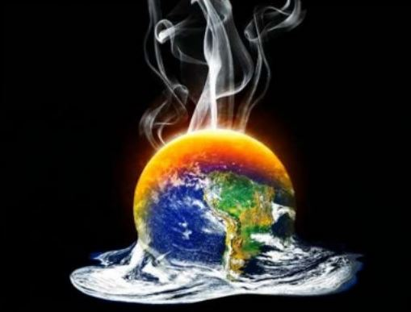
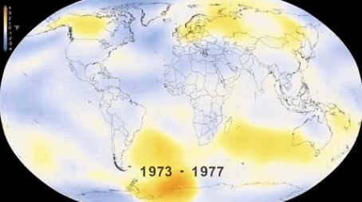
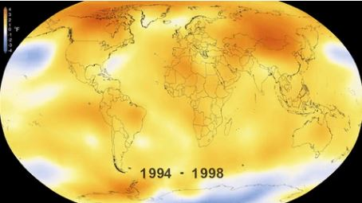
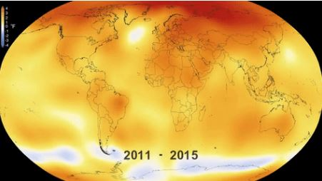

|  |
¿QUÉ ES EL CAMBIO CLIMÁTICO Y CÓMO TE AFECTA?Existe un gran desconocimiento de lo que es el cambio climático en realidad, bien por exceso de información, inexactitud en las fuentes o por desinformación interesada, lo que da origen a una serie de falsos mitos sobre el cambio climatico. En este espacio abordaremos desde un punto de vista objetivo y científico qué es el cambio climático, cuáles son sus causas, sus consecuencias y cómo se puede combatir. En definitiva, cómo nos afecta el cambio climático. |
 |
|---|---|
| En primer lugar es necesario aclarar dos conceptos que, si bien están estrechamente relacionados, con frecuencia se toman de manera errónea como sinónimos: el cambio climático y el calentamiento global. Existe una importante diferencia, y es que el calentamiento global es la causa del cambio climático, es decir, el aumento de la temperatura del planeta provocado por las emisiones a la atmósfera de gases de efecto invernadero derivadas de la actividad del ser humano, están provocando variaciones en el clima que de manera natural no se producirían. |  |
La Tierra ya se ha calentado y enfriado en otras ocasiones de forma natural, pero lo cierto es, que estos ciclos siempre habían sido mucho más lentos, necesitando millones de años, mientras que ahora y como consecuencia de la actividad humana, estamos alcanzando niveles que en otras épocas trajeron consigo extinciones en apenas doscientos años.
|
 |